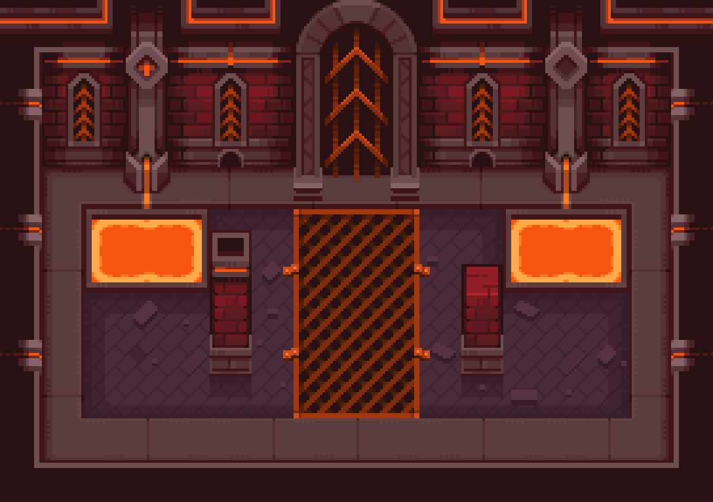
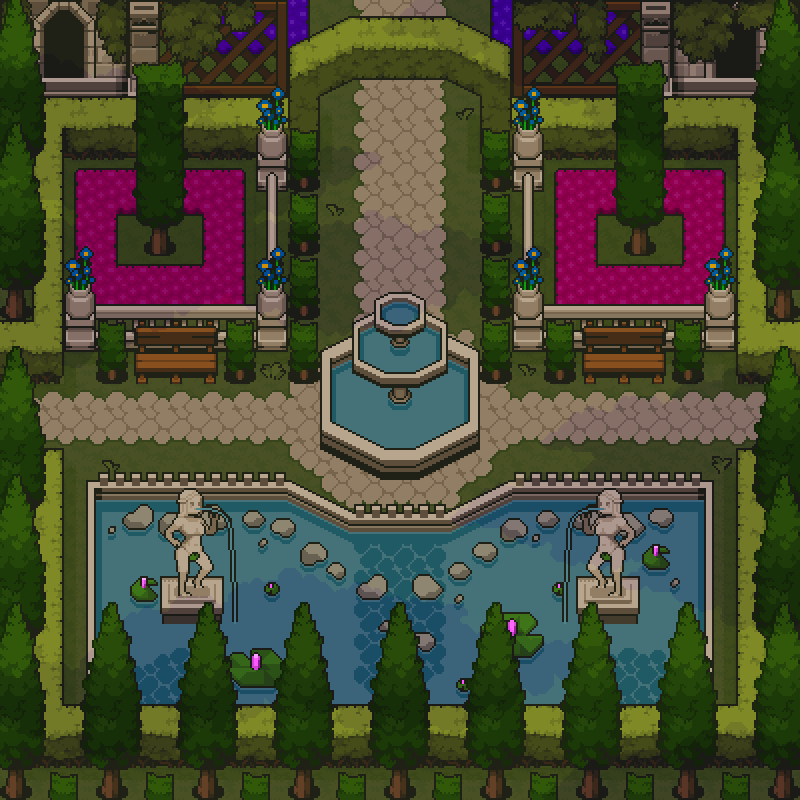
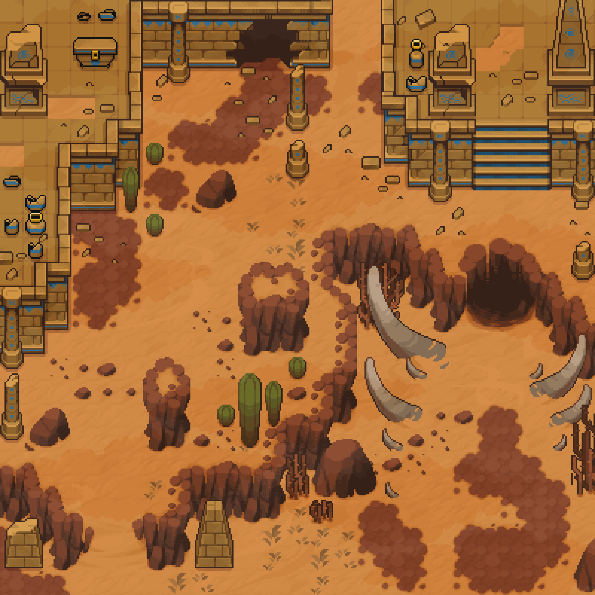
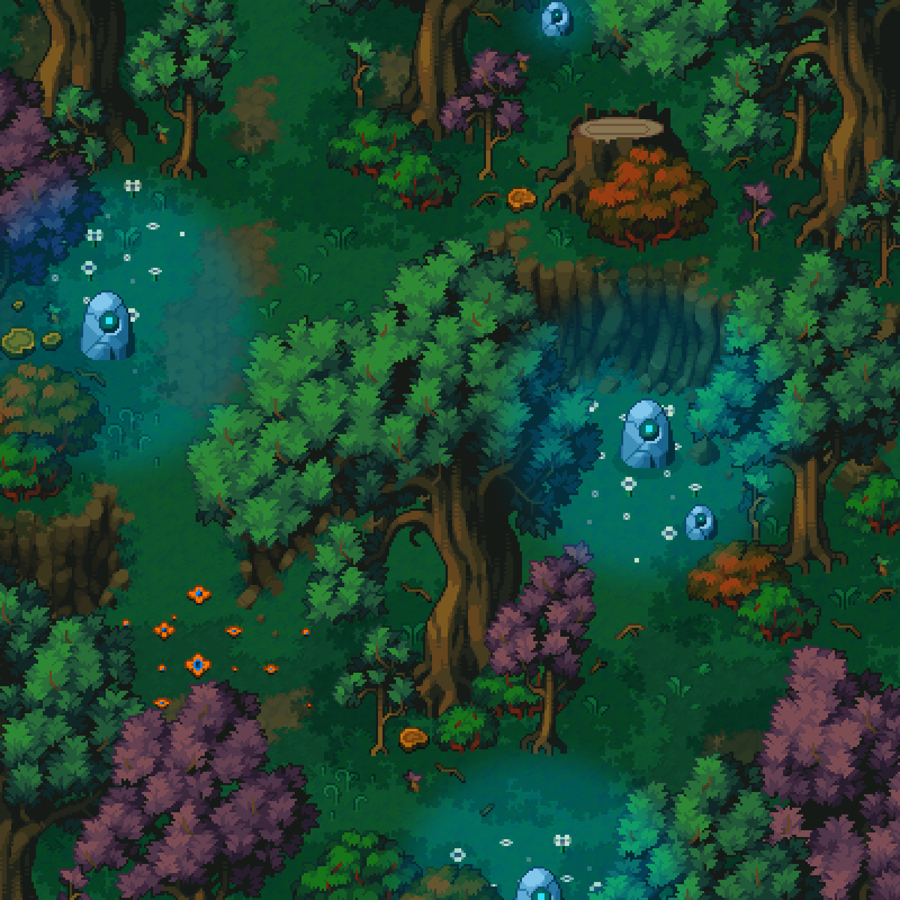

Fire Forge
Existing pixel scene for this biome.
TypeZone
Level band30–35
Creatures
Vurthek, the CinderbornBoss · Lv 560
Armored OrcLv 72 · ×6
Cinder ImpLv 31
Composed pixel scenes only — the same kind of painting as the homepage garden. No tileset sheets, no map screenshots.
Existing pixel scene for this biome.
Same art as the homepage hero.
Existing pixel scene for this biome.
Same art as the homepage hero.
Fungus Domain, Sewers, The Hollow, and the rest do not have a scene painting yet. Those pages would stay the current dark wiki until we have a composed pixel room like Fire Forge — not a repeating sprite sheet.



